Characters
On this page you will find a character list with a short description of each character together with an impression of their visual appearance made by illustrator AMOK. This list is not exhaustive, but contains the characters of which we think are key people in the story.
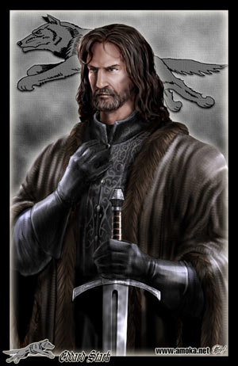 Eddard (Ned) Stark - The Lord of Winterfell and new Hand of the King. A devoted father and dutiful lord, he is best characterized by his strong sense of honor, and he strives to always do what is right, regardless of his personal feelings.
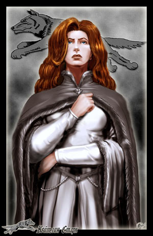 Catelyn (Cat) Tully - Ned’s wife and Lady Stark of Winterfell. She is intelligent, strong, and fiercely devoted to her family, leading her to seek out the person responsible for trying to kill her son Bran.
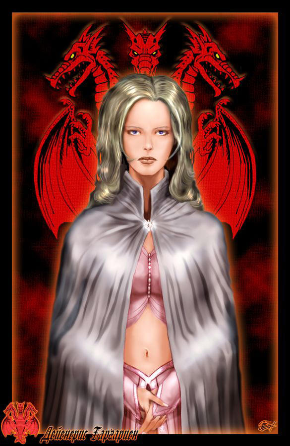 Daenerys Stormborn Targaryen - The Dothraki khaleesi (queen) and Targaryen princess. She and her brother are the only surviving members of the Targaryen family, and she grows from a frightened girl to a confident ruler, while still maintaining her kindness, over the course of the novel.
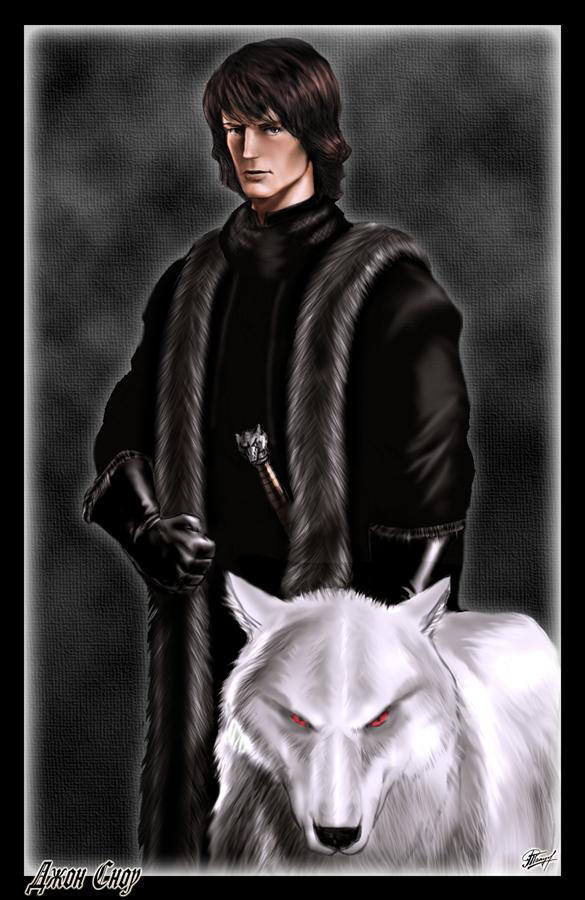 Jon Snow - Ned Stark’s bastard son. Since Catelyn is not his mother, he is not a proper member of the Stark family, and he often feels himself an outsider. He is also a highly capable swordsman and thinker, with a knack for piercing observations.
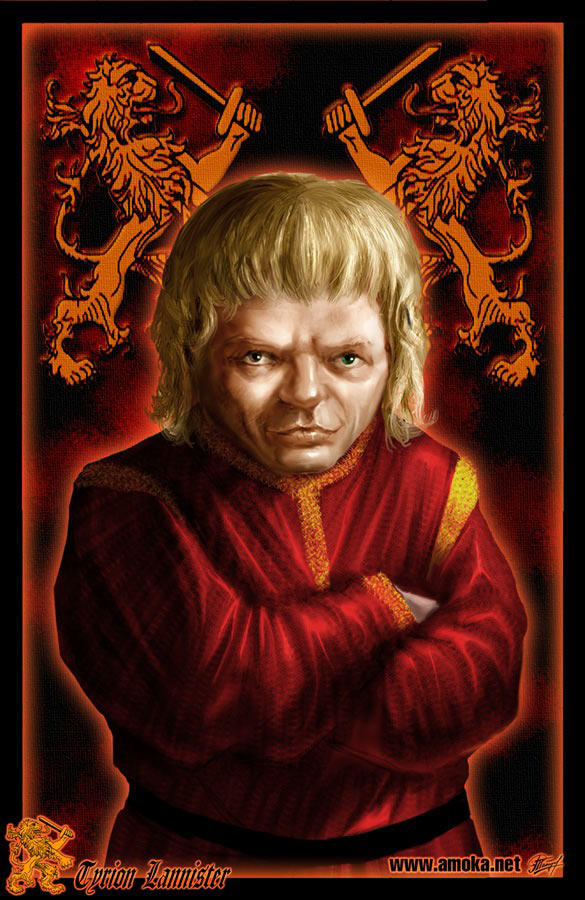 Tyrion (The Imp) Lannister - A small man with a giant intellect and sharp tongue. Tyrion does not pity himself but rather accepts his shortcomings as a little person and turns them to his advantage. He loves his family but recognizes their greed and ambition.
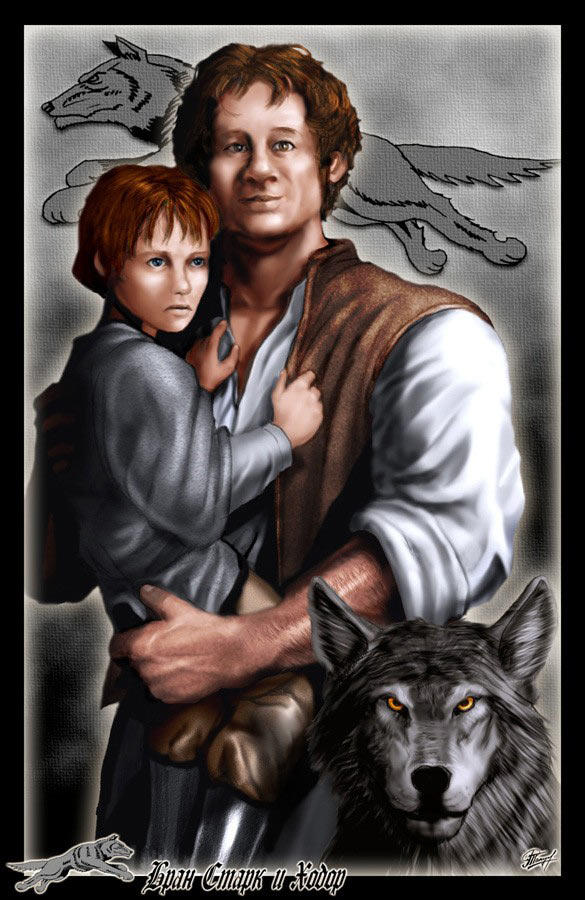 Bran Stark - One of the youngest of the Stark children. Bran is fascinated by stories of knights and adventure, but when is paralyzed in a fall and realizes he is no longer able to become a knight, he is forced to reconsider his life.
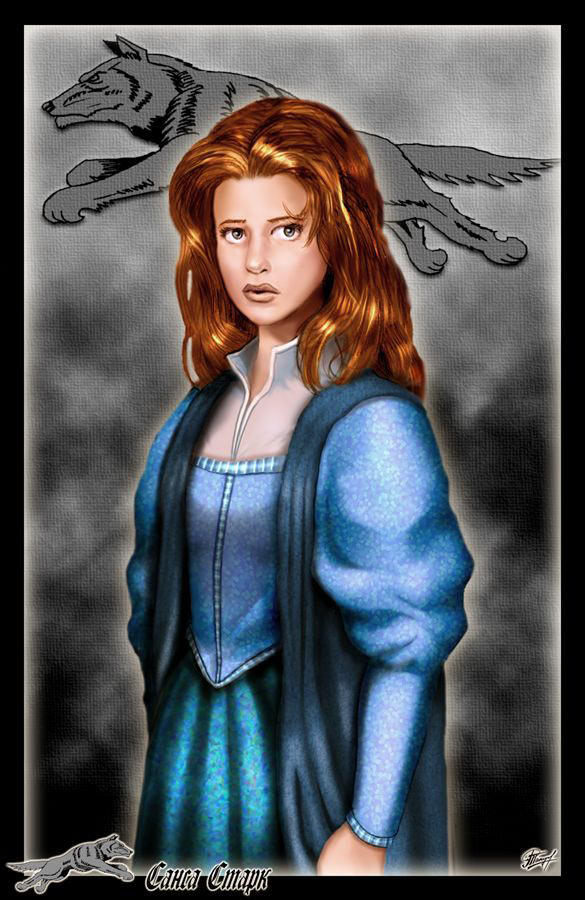 Sansa Stark - The elder Stark daughter and a beautiful, but extremely naïve, young girl. The twelve-year-old Sansa imagines her life as though it were a storybook, ignoring cruel realities around her and concerning herself only with marrying Joffrey Baratheon.
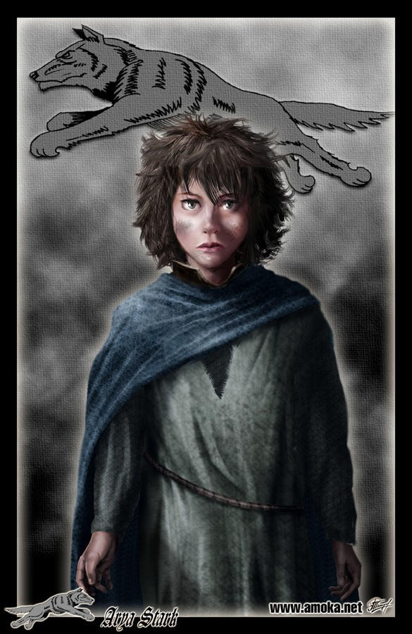 Arya Stark - The youngest Stark girl and a wild, willful, but very intelligent child. What the ten-year-old Ayra lacks in her sister’s refinement, she makes up for with skill in swordfighting and riding. Arya rejects the idea of a woman’s role being to marry and have babies.
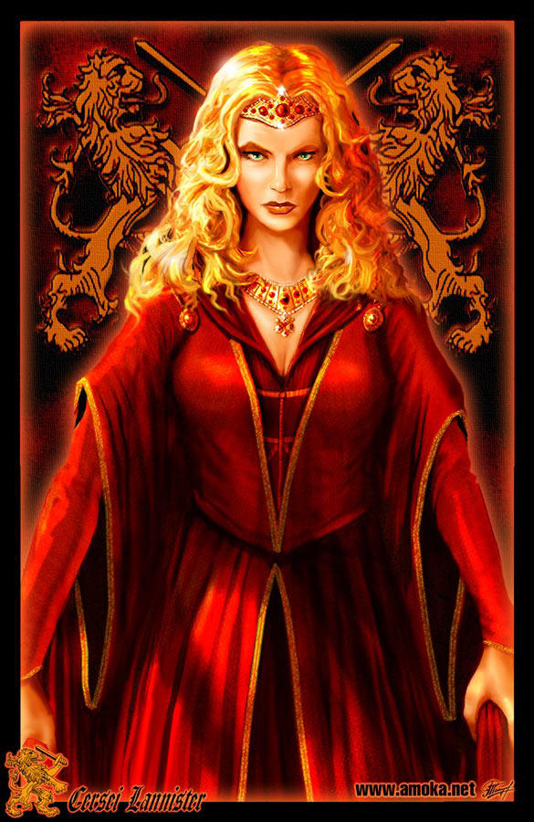 Cersei Lannister - Queen of the realm and wife of Robert Baratheon. She despises Robert (as well as most other people it seems), and she is cunning and extremely ambitious.
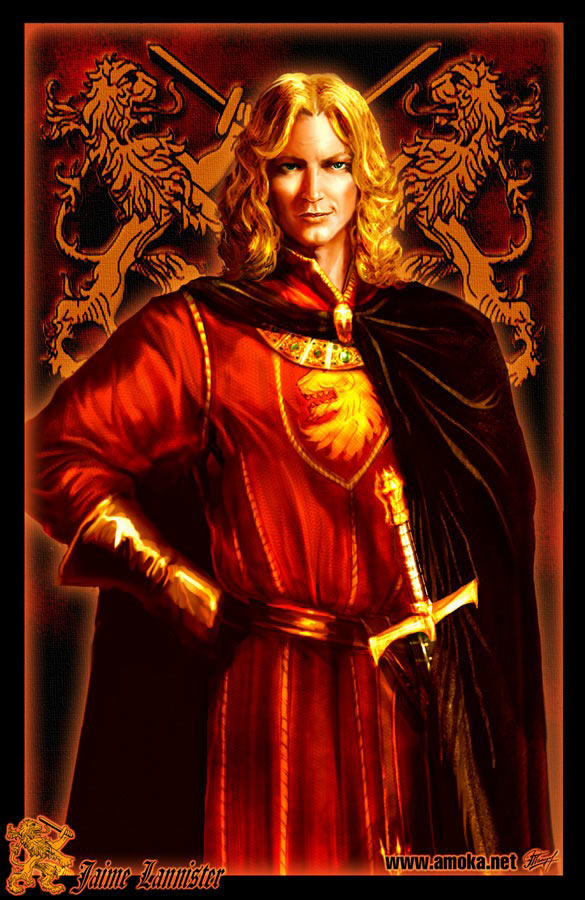 Ser Jaime (The Kingslayer) Lannister - Brother to Tyrion and Cersei, as well as Cersei’s lover. Jaime is arrogant, short-tempered, and rash, but he’s also a gifted swordsman. He is widely mistrusted and called Kingslayer because he murdered the previous king.
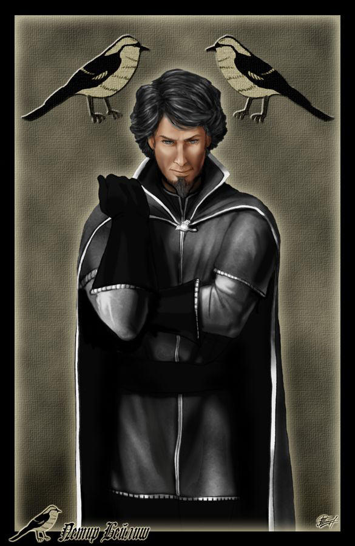 Petyr (Littlefinger) Baelish - The Red Keep’s master of coin. He is shrewd, conniving, and selfish, and he keeps informed about everything that goes on in King’s Landing. He holds a grudge against the Starks because he wanted to marry Catelyn when he was younger.
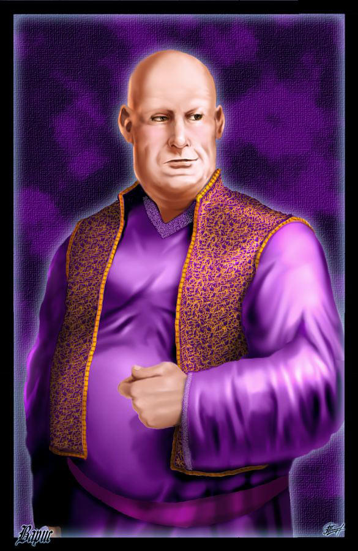 Varys (The Spider) - The Red Keep’s master of whispers and a eunuch. His role in the court is to run a network of spies and keep the king informed, and he often uses what he knows to manipulate those around him, including the king.
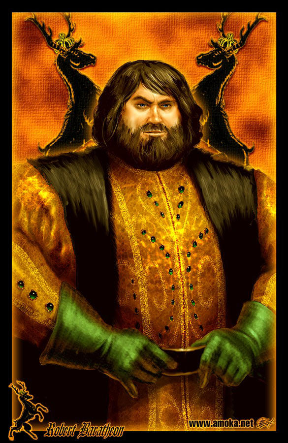 Robert Baratheon - The corpulent king of Westeros. He loves to fight, drink, and sleep with women, and he hates the duties of ruling. He and Ned are long-time friends, and he was engaged to Ned’s sister until she died.
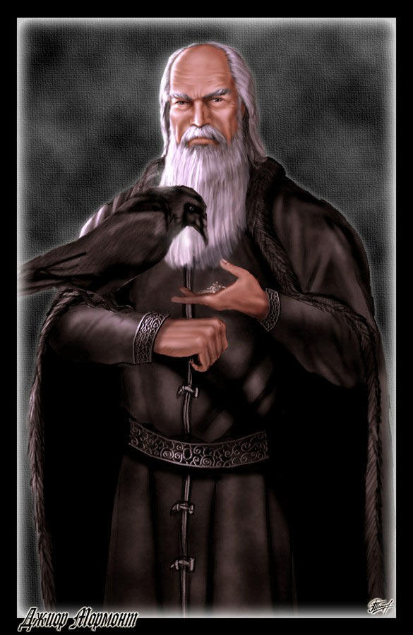 Ser Jorah Mormont - An exiled knight who serves unofficially as Daenerys’s chief advisor. Though he was exiled by Ned Stark for selling slaves, he is intelligent, valiant, and a great fighter. He swears allegiance to Viserys as true king of Westeros, but he also feeds information about the Targaryens back to Varys.
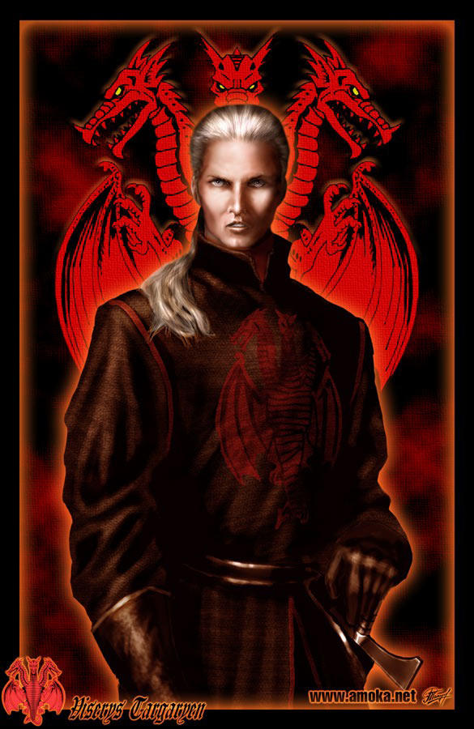 Viserys Targaryen - Brother of Daenerys and son of the murdered King Aerys Targaryen. Having lived in exile for many years, earning him the nickname of The Beggar King, he wants to return to Westeros and retake the throne. He is arrogant, cruel, easily angered, and foolish
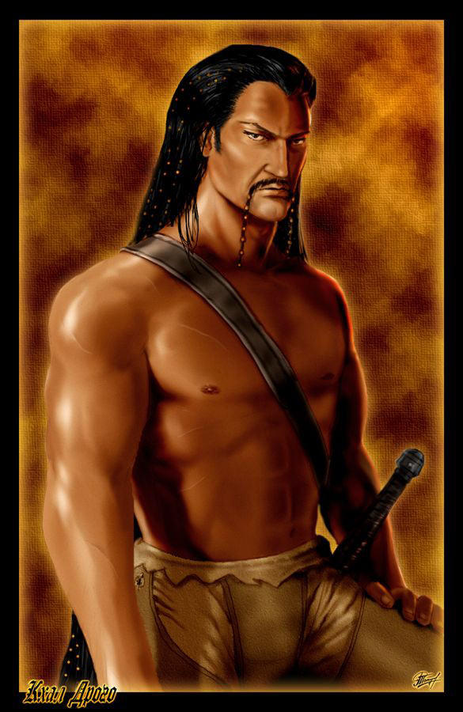 Khal Drogo - A powerful khal (king) among the Dothraki people and the husband of Daenerys Targaryen. Stoic and brave, Drogo is an exceptional warrior who shows his enemies no mercy. He controls a massive nomadic tribe, or khalasar.
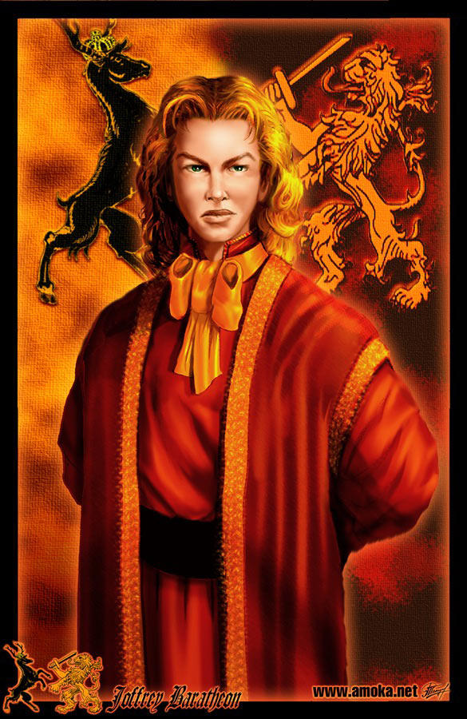 Prince Joffrey (Joff) Baratheon - The repulsive prince of Westeros. The twelve-year-old Joff is the eldest child of Cersei and Robert, and he is spoiled, impulsive, and cruel when using his power as prince and heir to the throne.
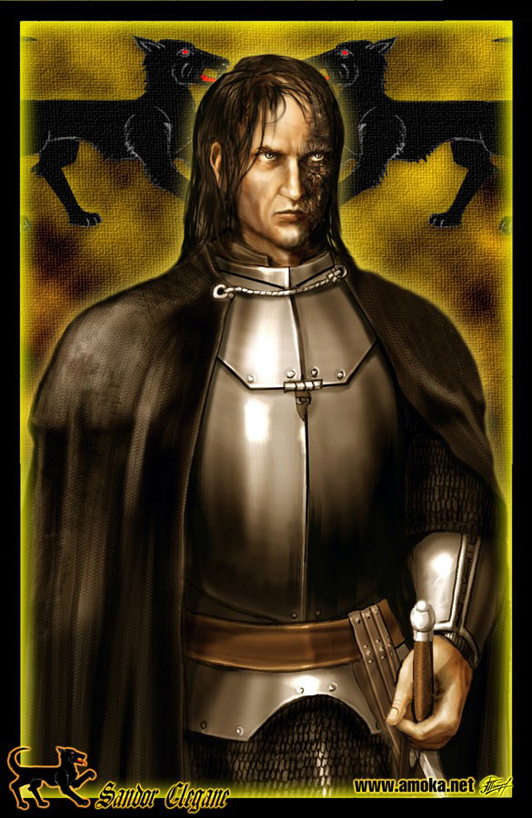 Sandor (The Hound) Clegane - Prince Joff’s unofficial bodyguard. Proud that he is not a knight, The Hound appears to have no scruples whatsoever and does what Joffrey orders, however cruel or unjust, without question. His face is scarred on one side by extensive burning inflicted by his brother, Gregor.
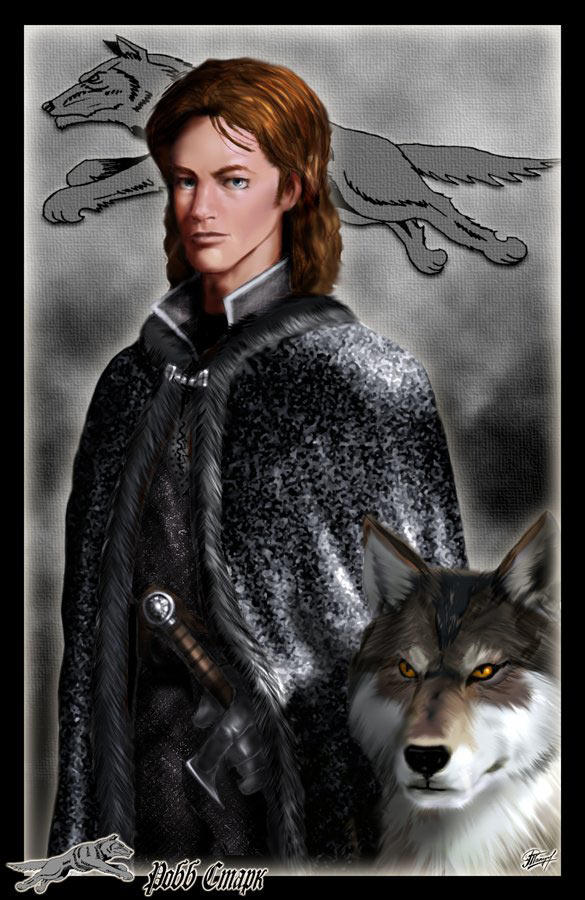 Robb Stark - The eldest Stark son and thus heir to Ned Stark. Though just fourteen, he is mature beyond his age as well as being brave and dutiful like his father.
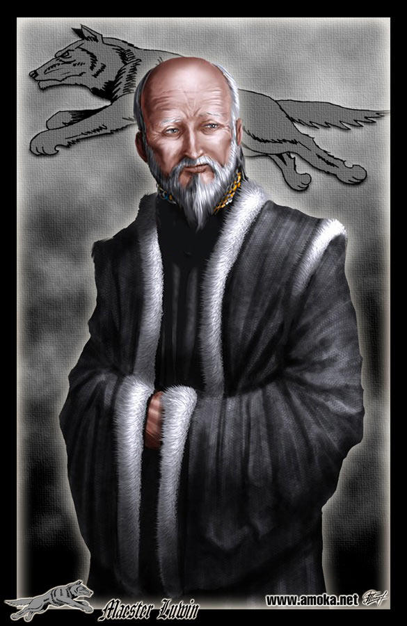 Maester Luwin - Counselor to Ned, Catelyn, and Robb. Luwin is old and wise, and his advice proves indispensible to the Starks.
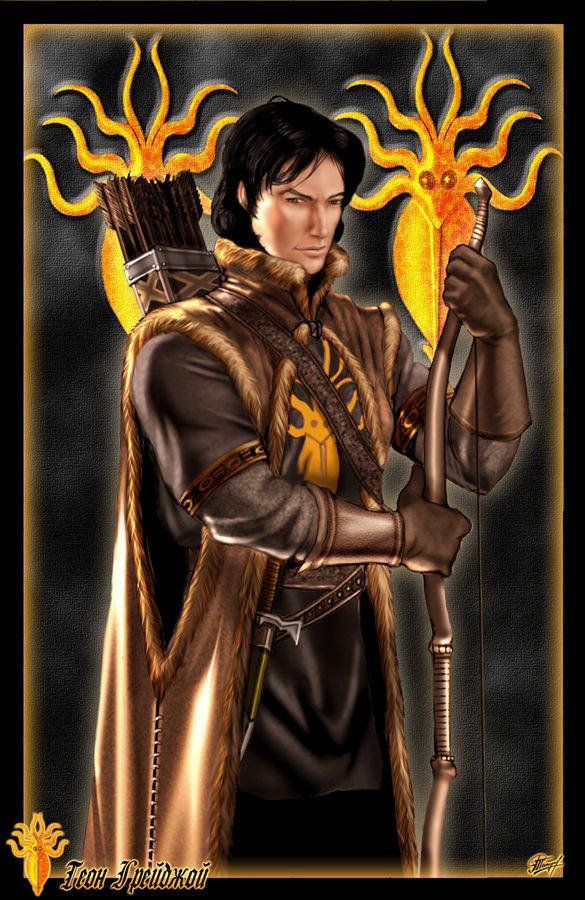 Theon Greyjoy - The Starks’s ward and Robb’s best friend. Ned Stark took the young Theon, now nineteen, as a ward after putting down a rebellion led by the Greyjoy family, and Theon consequently grew up with the Stark children as something like a brother.
DISCLAIMER: All information on this page is a selection taken from a book summary found on sparknotes. For an exhaustive list of characters you can visit that website.